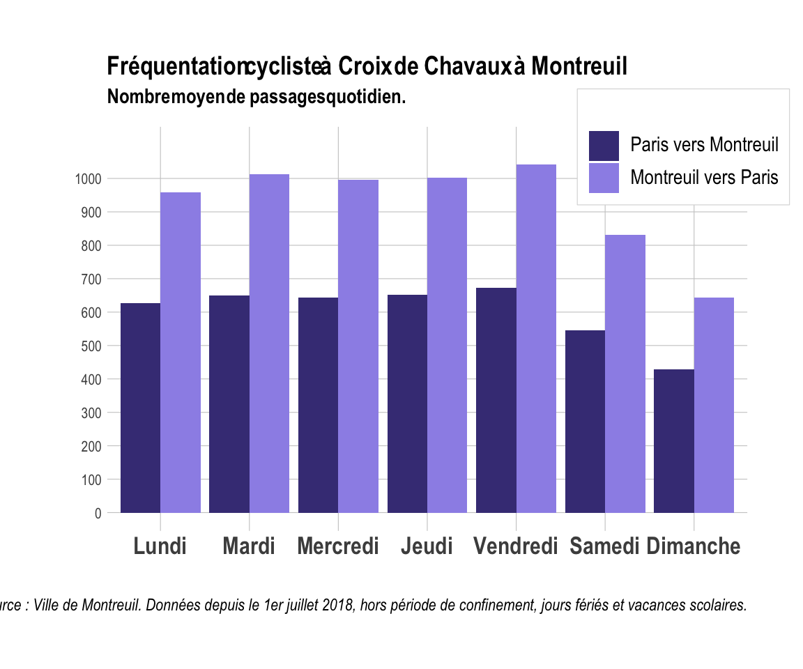
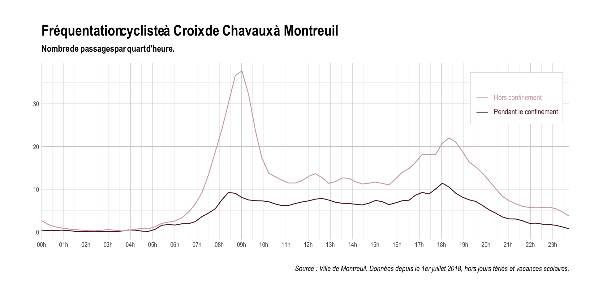
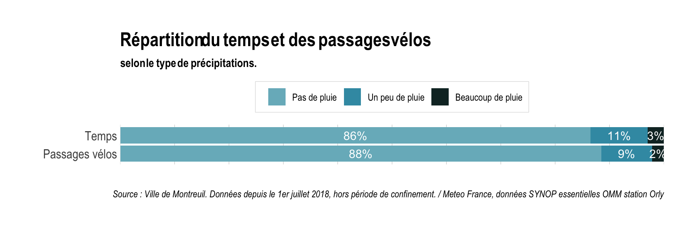
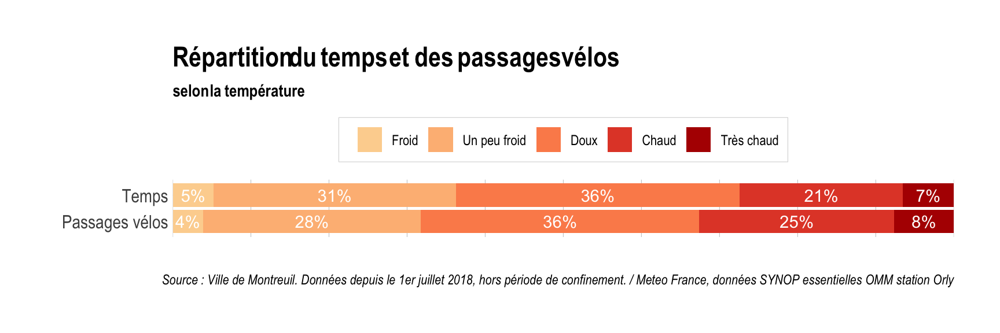
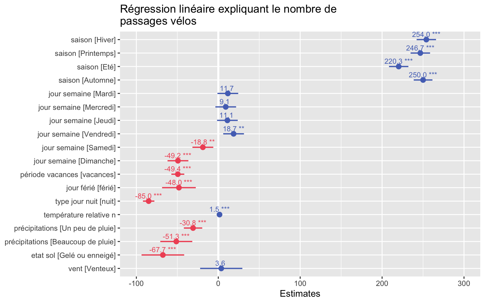

Pour accompagner son plan vélo et quantifier le trafic cycliste dans le centre-ville, la ville de Montreuil a installé en 2018 un compteur place Croix-de-Chavaux et publie en open-data les résultats toutes les semaines. Voici ce qu’il peut nous apprendre sur le trafic cycliste en ville, le code pour générer ce qui suit est ici.
Evolution depuis 2018
La croissance était assez linéaire : à la rentrée de septembre 2019 on voyait déjà une augmentation importante avec un pic le vendredi 13 septembre. On a changé de braquet en décembre avec les grêves des transports pour dépasser régulièrement les 3 000 passages par jour. Et puis la chute avec le confinement.
La version sismomêtre, sur une excellente idée de Jonathan Spring :

Profil d’une semaine type

Sur une semaine classique (hors vacances) c’est le vendredi qu’on prend le plus le vélo, c’est bientôt le week-end ça fait plaisir. Avec le compteur de passages on peut différencier le sens de circulation : à Croix de Chavaux, il est installé au Nord de la place ce qui favorise la prise en compte du trafic qui se fait vers Paris plutôt que celui qui part vers la mairie de Montreuil.
Soyons plus précis encore puisqu’on connait le trafic par quart d’heure :

En semaine le pic de circulation est à 9h du matin avec 40 passages en 15 minutes, soit quasiment 1 vélo toutes les 20 secondes. Phénomène qui se remarque pour tous les modes de transports, le vendredi on démarre plus tard : la courbe rouge est décalée d’environ 15 minutes par rapport aux autres jours de la semaine. Ce décalage semble d’ailleurs assez progressif : c’est de plus en plus dur de se réveiller !
La majorité des cyclistes sont des montreuillois partant travailler à Paris mais le compteur ne repère tous les retours en soirée vu sa localisation en haut de la place : on peut tout de même voir que du lundi au jeudi le pic du soir a lieu vers 18h30. Le vendredi par contre la croix de Chavaux est fréquentée toute l’après-midi, on débauche plus tôt.
Entre minuit et 2 heures du matin c’est bien sûr le vendredi soir et samedi soir que les choses se passent.
Avant / pendant le confinement
Le profil horaire du trafic pendant le confinement a aussi des particularités : plus tôt le matin avec un pic à 8h30, moins d’afflux le midi (pas de retour à la maison pour manger ?), un pic de soirée à 18h et un trafic quasi nul passé 23h. Le plus notable reste un trafic beaucoup plus stable tout au long de la journée avec une variabilité faible.

L’influence de la météo
Impossible de parler vélo sans évoquer la météo. Si les averses et les bourrasques ne décourageront pas les vrais vélotaffeurs équipés, elle peut tout de même refroidir les cyclistes moins avertis. Mais à quel point peut-elle jouer dans leur décision ?
Une sympathique étude a montré que les trajets mouillés à vélo étaient finalement assez rares. Les données du réseau Radome de Météo-France utilisées pour cette étude auraient été parfaites (infos sur les précipitations actualisées toutes les 6 minutes), mais malheureusement pas en open data (80 000€ tout de même). On va donc prendre l’option gratuite avec ces données en open-data de Meteo France qui informent sur les conditions (précipitations, nébulosité, état du sol…) par tranche de 3 heures et les comparer nombre de passages vélo à Croix de Chavaux pendant ce même créneau. Ici on analyse les données météo de la station de l’aéroport d’Orly puisque c’est la plus proche de Montreuil.

Donc 86% du temps il ne pleut pas une goutte. Voilà ce que ça représente depuis un an, jour par jour. Finalement un cycliste a peu de chances de se faire mouiller (traits en bleu) et encore moins d’être trempé (traits en noir).

2% des passages de vélo à Croix de Chavaux ont donc été effectué dans un créneau de 3 heures où il a beaucoup plu : désolé pour ceux qui se trouvaient sous l’averse ! Voyons maintenant quelles sont les stats moyennes de fréquentation selon l’intensité de la pluie :
56 passages de vélos par heure quand il ne pleut pas
49 passages de vélos quand il pleut un peu (entre 0 et 2 mm sur un créneau de 3 heures)
41 passages de vélos quand il pleut beaucoup (plus de 2 mm sur un créneau de 3 heures)
Qu’en est il de l’ensoleillement ?

21% du temps il fait grand beau, 21% il fait bien gris. Et c’est entre les deux, c’est à dire quand il y a des nuages, que le trafic cycliste est le plus dense :
49 passages de vélos par heure quand le ciel est dégagé
60 passages de vélos quand il y a des nuages.
49 passages de vélos quand il fait gris.
Et la température alors ?

Plus il fait chaud et plus ça roule !
41 passages de vélos quand il fait froid (moins de 2 degrès)
50 passages de vélos quand il fait frisquet (2 à 10 degrès)
54 passages de vélos quand il fait doux (10 à 18 degrès)
66 passages de vélos quand il fait chaud (18 à 26 degrès)
64 passages de vélos quand il fait très chaud (plus de 26 degrès)
Modélisation
Pour comprendre quels facteurs influencent le plus la fréquentation, on procède à l’ajustement d’un modèle de régression linéaire. Après plusieurs tentatives on atterrit sur un r2 de 0,7, un pouvoir explicatif correct, et voilà ce qu’on peut en retirer (évidemment on a exclu la période de confinement).

Voici comment interpréter le graphique de bas en haut :
- Moins de vélos en été (probablement moins de Montreuillois présents aussi), mais ça reste assez équivalent pendant les autres saisons.
- Si on prend comme référence le lundi, le vendredi compte 19 cyclistes de plus par créneau de 3 heures, le samedi 19 de moins et surtout le dimanche on compte presque 50 cyclistes de moins.
- Un dimanche, un jour férié ou un jour de vacances scolaires c’est quasiment le même effet : - 50 cyclistes. Waou tout ça pour en arriver là ! C’est rassurant.
- La nuit c’est 85 cyclistes de moins que le jour. Il faut aussi avouer qu’on a plutôt tendance à dormir la nuit qu’à faire du vélo, mais le jour étant plus long en été qu’en hiver ça contrebalance les niveaux de passage par saison.
- 1 degré de plus c’est 1,5 passages supplémentaires. Là ça commence à être intéressant puisque la température calculée par créneau ici est relative, comparée à la température moyenne de la saison et le créneau horaire : qu’elle que soit la saison, plus il fait relativement doux/chaud, plus le trafic cycliste est important.
- Lorsqu’il pleut beaucoup, c’est comme si c’était dimanche ! 51 cyclistes ont disparu, et lorsqu’il pleutine (< 2 mm en 3 heures) c’est 31 cyclistes en moins.
- Un sol gelé ou enneigé freine plus les ardeurs des cyclistes qui seront 68 de moins, là encore c’est assez logique.
- Enfin a priori pas d’effet remarqué du débit moyen du vent sur le trafic.